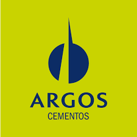

Responsible Consumption and Production
Exploring how Colombia, through its companies and communities, advances towards Sustainable Development Goal 12 to transform its production and consumption patterns.
Understanding SDG 12
This section breaks down the importance, origin, and global development of SDG 12, which seeks to fundamentally change how we produce and consume to ensure a sustainable future.
Origin and Objective
Sustainable Development Goal (SDG) 12 is a fundamental part of the 2030 Agenda. Its importance lies in radically transforming how our societies produce and consume goods and services. The unsustainability of our current patterns is at the root of many environmental challenges such as climate change, biodiversity loss, and resource depletion.
Its roots are in global discussions dating back to the 1992 Rio Earth Summit, consolidating in 2015 as one of the 17 SDGs. It represents the understanding that for truly sustainable development, it is not enough to produce efficiently; it is imperative that consumers adopt responsible habits.
How has it developed globally?
Policies & Regulation
Circular economy laws, waste management, and single-use plastic bans.
Business Innovation
Adoption of circular economy principles, use of recycled materials and renewable energy.
Consumer Education
Awareness campaigns, eco-labeling, and promotion of conscious lifestyles.
Strategic Alliances
Collaboration between governments, businesses, and civil society to scale sustainable solutions.
Local Initiatives in Colombia
Here you can explore concrete examples of how different sectors in Colombia are implementing sustainable practices. Use the filters to navigate between company and community initiatives.
Argos - Cement
 Circular EconomyUtilizes industrial and agricultural waste as alternative fuels in its kilns, reducing CO2 emissions and managing waste. Through co-processing, it transforms waste into valuable resources.
Corona - Construction
 Recycling & Reuse
Recycling & Reuse
Promotes the creation and operation of construction and demolition waste (CDW) recycling centers. Debris is processed to create recycled aggregates for new constructions, closing the material life cycle.
Creytex - Textile
Positions itself as a manufacturing supplier with sustainable processes and materials. It has developed 100% sustainable lines like "Go Green", minimizing environmental impact at every stage.
Iraca Palm Artisans
Ancestral PracticesIn Sandoná, Nariño, palm collection is manual and selective, ensuring regeneration. They use natural dyes from plants, creating durable, biodegradable products and preventing water pollution.
Recyclers Associations
Large-Scale RecyclingOrganized communities in cities like Bogotá and Medellín that collect, classify, and valorize urban solid waste, reincorporating it into the production chain and massively contributing to the circular economy.
Circular Wardrobe Infographic
Explore the key concepts of the Circular Wardrobe initiative, a sustainable approach to fashion, illustrating how it works and its importance.

Practice Analysis
This chart summarizes the types of sustainability practices found in the local examples. It allows visualizing which areas of action are most common, highlighting the strong focus on recycling and material management.